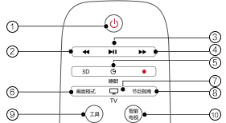
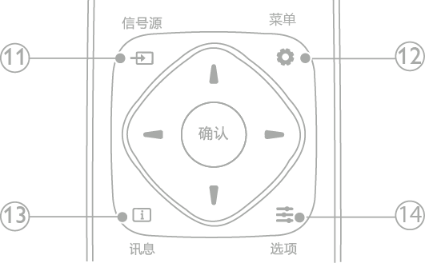
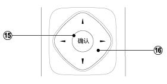
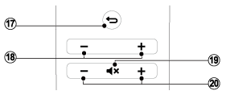
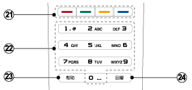

遥控器

待机-开机
在电视开机时将其切换到待机。
在电视待机时开机。
快退键
媒体中心 音频/视频快退功能。
播放/暂停键
媒体中心 音频/视频播放/暂停功能。
快进键
媒体中心 音频/视频快进功能。
睡眠键
控制电视睡眠时间。
画面格式
修改画面比例模式。
TV
切换至电视功能。
节目指南
打开或关闭数字电视节目指南。
工具
在模拟电视和数字电视时，打开频道列表。
智能电视
进入智能电视主界面。

信号源
开启或关闭信号源选单，选择连接的设备。
菜单
打开菜单，在网络视频播放时可以选择视频清晰度。
讯息
提示当前电视所处的状态。
选项
访问与当前活动或选择相关的选项。

确认
确认输入或选择和在观看电视时显示频道列表。
导航按钮
导航菜单。
在互联网电视首页开启时，用于光标在对象间移动。

返回
返回上一个菜单或退出当前应用。
频道 - / 频道 +
电视下切换上一个或下一个频道，部分场景下可进行向上/向下翻页及光标的移动。
静音
静音或恢复音量。
+/-
提高和降低音量。

彩色按钮
多功能键。
0-9 数字按钮
选择一个频道或输入频道的数字。
帮助
开启使用说明书。
回看
回看节目。